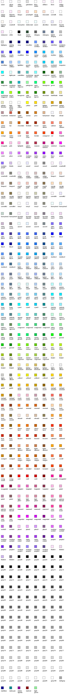

| PyChart |
| PyChart |
This class supports the following attributes:
The intensity of blue. The value is between 0 and 1.
The intensity of green. The value is between 0 and 1.
The intensity of red. The value is between 0 and 1.
For example, color.T(r=1, g=1, b=1) will produce white.
The color of color.T(r=1, g=0, b=1) will produce purple.
You can use all the colors defined in X rgb.txt (usually at
/usr/X11R6/lib/X11/rgb.txt). The below shows some of the standard
colors defined in the module. They are refereed to by the names
color.name (e.g., color.gray1).

| PyChart |